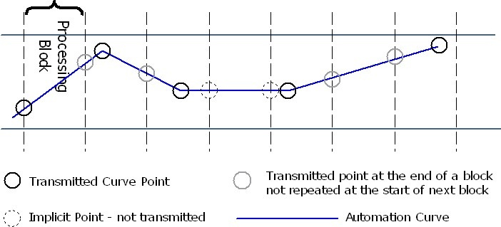

/ VST Home / Technical Documentation
[3.0.0] Interfaces supported by the host
On this page:
- Vst:: IAttributeList
- Vst:: IComponentHandler
- Vst:: IEventList
- Vst:: IUnitHandler
- Vst:: IHostApplication
- Vst:: IMessage
- Vst:: IParamValueQueue
- Vst:: IParameterChanges
- Steinberg:: IPlugFrame
Related pages
List of interfaces supported/implemented by the host in VST 3.0.0
Vst:: IAttributeList
Attribute list used in Vst:: IMessage and Vst:: IStreamAttributes.
- [host imp]
- [released: 3.0.0]
- [mandatory]
An attribute list associates values with a key (id: some predefined keys can be found in Predefined Preset Attributes).
Vst:: IComponentHandler
Host callback interface for an edit controller.
- [host imp]
- [released: 3.0.0]
- [mandatory]
Allow transfer of parameter editing to component (processor) via host and support automation. Cause the host to react on configuration changes (restartComponent).
See also Vst:: IEditController.
Vst:: IEventList
List of events to process.
- [host imp]
- [released: 3.0.0]
- [mandatory]
See also ProcessData, Event.
Vst:: IUnitHandler
Host callback for unit support.
- [host imp]
- [extends Vst:: IComponentHandler]
- [released: 3.0.0]
- [optional]
Host callback interface, used with Vst:: IUnitInfo. Retrieve via queryInterface from Vst:: IComponentHandler.
See also VST 3 Units, Vst:: IUnitInfo.
Vst:: IHostApplication
Basic host callback interface.
- [host imp]
- [passed as 'context' in to Steinberg:: IPluginBase::initialize]
- [released: 3.0.0]
- [mandatory]
Basic VST host application interface.
Vst:: IMessage
Private plug-in message.
- [host imp]
- [create via Vst:: IHostApplication::createInstance]
- [released: 3.0.0]
- [mandatory]
Messages are sent from the processor component to then controller component and vice versa.
See also Vst:: IAttributeList, Vst:: IConnectionPoint, Communication between the components.
Vst:: IParamValueQueue
Queue of changes for a specific parameter.
- [host imp]
- [released: 3.0.0]
- [mandatory]
The change queue can be interpreted as segment of an automation curve. For each processing block, a segment with the size of the block is transmitted to the processor. The curve is expressed as sampling points of a linear approximation of the original automation curve. If the original already is a linear curve, it can be transmitted precisely. A non-linear curve has to be converted to a linear approximation by the host. Every point of the value queue defines a linear section of the curve as a straight line from the previous point of a block to the new one. So the plug-in can calculate the value of the curve for any sample position in the block.
Implicit Points:
In each processing block, the section of the curve for each parameter is transmitted. In order to reduce the amount of points, the point at block position 0 can be omitted.
-
If the curve has a slope of 0 over a period of multiple blocks, only one point is transmitted for the block where the constant curve section starts. The queue for the following blocks will be empty as long as the curve slope is 0.
-
If the curve has a constant slope other than 0 over the period of several blocks, only the value for the last sample of the block is transmitted. In this case, the last valid point is at block position -1. The processor can calculate the value for each sample in the block by using a linear interpolation:
double x1 = -1; // position of last point related to current buffer double y1 = currentParameterValue; // last transmitted value int32 pointTime = 0; ParamValue pointValue = 0; IParamValueQueue::getPoint (0, pointTime, pointValue); double x2 = pointTime; double y2 = pointValue; double slope = (y2 - y1) / (x2 - x1); double offset = y1 - (slope * x1); double curveValue = (slope * bufferTime) + offset; // bufferTime is any position in buffer
Jumps:
A jump in the automation curve has to be transmitted as two points: one with the old value and one with the new value at the next sample position.

See also Vst:: IParameterChanges, ProcessData.
Vst:: IParameterChanges
All parameter changes of a processing block.
- [host imp]
- [released: 3.0.0]
- [mandatory]
This interface is used to transmit any changes to be applied to parameters in the current processing block. A change can be caused by GUI interaction as well as automation. Changes are transmitted as a list of queues (Vst:: IParamValueQueue) containing only queues for parameters that actually did change.
See Vst:: IParamValueQueue, ProcessData.
Steinberg:: IPlugFrame
Callback interface passed to Steinberg:: IPlugView.
- [host imp]
- [released: 3.0.0]
- [mandatory]
Enables a plug-in to resize the view and causes the host to resize the window.